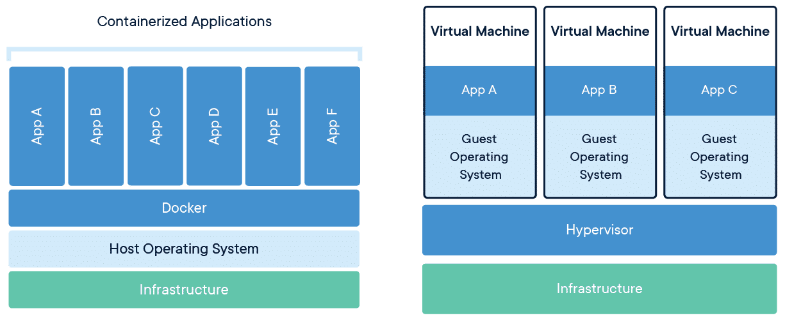
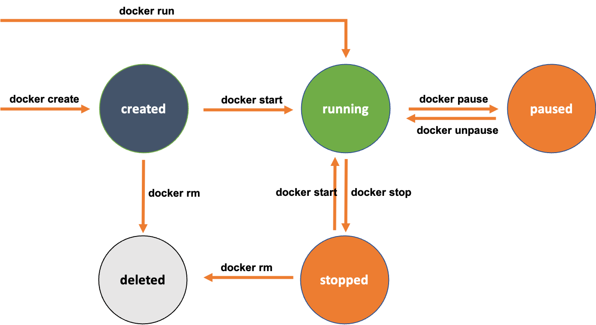

🍴 Taste of Docker
docker pull postgres
docker pull bitnami/redis
docker pull quay.io/coreos/etcd
docker run -t -p 8080:80 docker/getting-started
docker run -d -p 8082:80 wordpress:latest
History of Docker
- dotcloud.com and Solomon Hykes
- Made Linux LXC accessible
- Y Combinator 2010, Debuted in 2013
- MSFT, IBM, Google, and Amazon Support
❓ What is Docker?
- Docker is a containerization technology
- Platform to build, ship and run any server apps
- Supports any language
- Supports many OSes
- One command per container
🔬 Images and Containers
A Docker image is a lightweight, standalone, executable package of software
that includes everything needed to run an application: code, runtime, system tools,
system libraries and settings.
Images become containers when they are run.
🥊 Containers vs VMs
Containers are isolated, but share OS and bins/libraries (where appropriate)
👍 Advantages of Containerization
- Consistent test environment for dev and QA
- Isolation and encapsulation of app dependencies
- Ability to scale efficiently, easily, and in real-time
- Enhances efficiency via easy reuse of images
- Great for getting apps to customers
🚆 Getting Started with Docker
- Download from https://docker.com and install
- Run Docker
- CLI or Desktop Interface
- Run a container
- Will automatically download a Docker image
- Can control volumes, network, DNS, etc.
🏃 Running a Container
docker run hello-world
docker run -it ubuntu bash
docker ps
docker images
docker run -it --rm debian bash
🧬 Container Lifecycle

📜 Docker Examples
git clone https://github.com/pambrose/docker-demo.git
docker run -it --rm pambrose/asciiquarium
docker run -p 8080:8888 -it --rm pambrose/nginx-demo
docker run --rm -p 8080:8080 pambrose/ktor-demo
https://github.com/pambrose/docker-demo
🎆 Pushing to Docker Hub
- Docker Registries
- https://hub.docker.com
- Naming conventions
- Versioning
🏄 Deploying to Digital Ocean
- https://www.digitalocean.com
- Choose resources
- Specify environment variables
- Choose region
- Scaling
- Integrate with other services
🎛 Container Orchestration
- Microservices
- Kubernetes
- Load balancing and traffic routing
- Monitoring and security
- Istio
- Hosting on AWS, Azure, and GCP
🕴 Docker as a Business
- K8s vs. Swarm
- Hykes' Departure
- K8s and CRI
- Sold off enterprise business to Mirantis
- Dual Licensing
 https://pambrose.github.io/myslides/docker.html
https://pambrose.github.io/myslides/docker.html